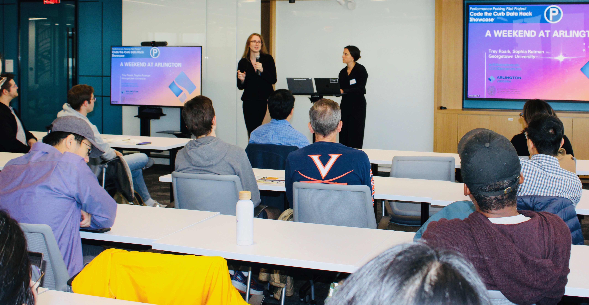

Sophia Rutman
Welcome to my personal website!
About me
I am a graduate student at Georgetown University earning an MS in Data Science and Analytics. I completed my BA at Bowdoin College in Brunswick, Maine, graduating in 2024 with degrees in Physics and Computer Science. I also completed a minor in Education. As part of my Computer Science major, I completed an Advanced Independent Study with Professor Sarah Harmon on the intersection between LLMs and entertainment, after which I presented my findings to the International Conference on Interactive Digital Storytelling. I also completed two summers of Software Test Engineering at Freddie Mac and Paramount Global. At Bowdoin, I was a member of the Varsity Field Hockey and Women’s Lacrosse teams during her undergraduate years, serving as captain of the field hockey team her senior year. This love of sports has driven me to work with various teams at Georgetown on their operations teams. I want to translate the skills she has learned throughout her time at Georgetown and Bowdoin into a profession in sports analytics.
Education
2026: Georgetown University’s Graduate School of Arts and Sciences
2024: Bowdoin College: BA in Physics and Computer Science with a Minor in Education
Interests
Large Language Models
Predictive Analytics
Sports Operations and Management
Business Analytics within the Sports Industry
Languages
Python
R
Ruby
Java
C/C++
SQL
HTML/CSS/JavaScript
Libraries
Python
Tensorflow
Matplotlib
Pandas
Numpy
Sklearn
R
tidyverse
dplyr
ggplot2
Databases
Relational Databases
MongoDB
Snowflake
Collaboration
Git/Github
AGILE Methodology
Scrum
My Resume:
My resume
My Linkedin:
My Linkedin
My projects
Sports Betting and Tribal Gambling Project Website
Capitol to Capital: Using Lobbying Data as a Technical Indicator Github Page
Creating a Batting Order Github Page
Conferences
International Conference for Interactive Digital Storytelling
Link to paper: Published Paper
Code the Curb


Datathons
DatakindDC
Volunteer Match